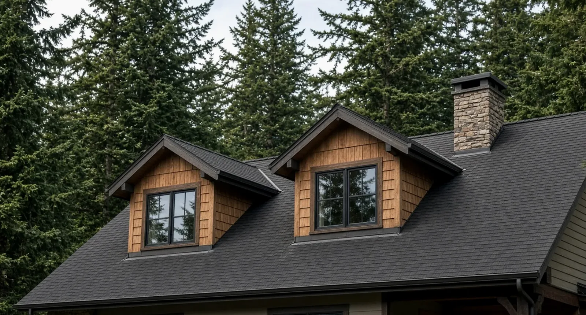
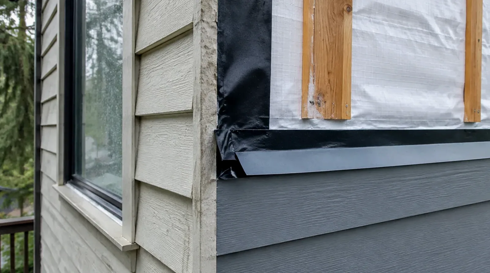
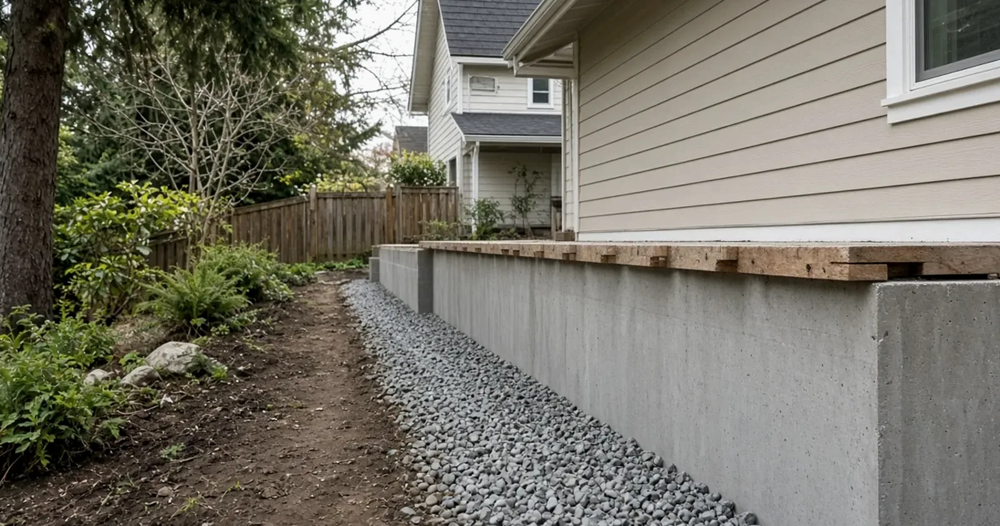

Earthquake Home Retrofit Seattle WA — SDCI's Prescriptive Plan Set, Cripple Walls & Foundation Bolting
By Board of Project Stewardship Editorial
Key Takeaways
- Seattle's Earthquake Home Retrofit Permit/earthquake-home-retrofit-permit) (formerly known as Project Impact) lets qualifying homes use a prescriptive plan set instead of hiring a design professional, and projects that use the plan set qualify for reduced permit fees.
- The work follows an "ABC": anchor the house to its foundation, brace the wall between the foundation and the first floor, and connect that wall to the first-floor framing. It happens in the crawlspace or basement, below the first floor.
- Not every house qualifies. You check Table 1 on Sheet S0 of the plan set first; if the house fails any question, you can still retrofit, but with plans designed and stamped by an engineer.
Why older Seattle houses are the focus
Seattle has thousands of craftsman bungalows, foursquares, and mid-century ramblers sitting on short crawlspace walls or partial basements. Many of them were built before builders routinely bolted the wood sill to the concrete or sheathed the short "cripple" walls under the first floor. In a strong earthquake, those are the two weak points: a house can slide off its foundation, or a cripple wall can rack over and drop the floor above it.
The city's own homeowner flyer, Protect Your Home From Earthquake Damage, says it plainly: most earthquake damage to single-family homes is caused either by the home jumping from its foundation or by the collapse of a weak pony wall. SDCI's 2025 Home Fair presentation on the program adds a rule of thumb. A house built after the early 1980s may already have the required anchors, bracing, and connections. If your home could be described as "craftsman" or "mid-century modern," you may need to retrofit.
Washington's broader hazard picture is documented by the state. The Department of Natural Resources maintains earthquake and fault information for the state, and the Washington Emergency Management Division keeps an earthquake preparedness page. You do not need to become a seismologist to make a good decision here. You need to know how your house is built and whether its foundation connections are adequate.
One honest caveat from SDCI's own materials: this program "will not earthquake-proof your home." It targets the most common and most fixable failure points. The Board's Seattle directory and permits guide cover the wider permitting landscape.
What the permit program actually offers
According to SDCI's program page/earthquake-home-retrofit-permit), the city provides prescriptive plan sets that help qualifying homes get the permit quickly and remove the need to hire a design professional to draw plans. The flyer notes that homeowners have had access to pre-designed retrofit plan sets since 1998, and that the plan set was developed in partnership with the Federal Emergency Management Agency and the Seattle Office of Emergency Management.
SDCI's presentation traces the history: the Project Impact approach began in California after the 1994 Northridge earthquake, FEMA later developed a nationwide version, and the Washington Association of Building Officials adapted those drawings to fit a broad range of existing Washington homes.
The practical benefits SDCI lists:
- Reduced fees. Fees are based on your estimated value of work, labor, and materials, and Earthquake Home Retrofit projects that use the prescriptive plan set qualify for reduced permit fees. All fees carry an additional technology fee; see the city's fee subtitle for current figures.
- Faster review. SDCI says it typically does its initial review of these permits in two weeks.
- No intake appointment. Projects can be submitted for screening and accepted for expedited review without an appointment.
We are not quoting a dollar figure for the permit or the work. Both depend on the size of the house, the length of wall that needs bracing, and access in the crawlspace. Get a written estimate for your own home.
Does your house qualify? Sheet S0, Table 1
Eligibility comes first. The prescriptive plan set opens with Table 1, "Eligibility for Use," on Sheet S0. If the answer to any question is no or "non-compliant," the house is not eligible for the prescriptive route. SDCI's Home Fair presentation summarizes the questions:
- Is it a one- or two-family dwelling?
- Is it two stories or less, of light wood-frame construction?
- Does it have a crawlspace or basement?
- Is the foundation continuous?
- Are any cripple walls under 7 feet tall?
- Is the site sloped less than 30 percent?
- Is the roof lightweight, under 12 pounds per square foot?
- Are exterior walls under 10 pounds per square foot?
- Is the house under 4,000 square feet?
- Is the foundation something other than masonry or stone?
- Is there no sign of an existing engineered seismic-force-resisting system?
In plain terms, the flyer describes eligible homes as light wood-frame construction with a light roof, not irregularly shaped, on a concrete or reinforced masonry foundation in good condition, and on a relatively level lot. Questions about heavy cladding and roofing matter because the plan set has a weight classification on Sheet S3. A house with a heavy tile roof or masonry veneer behaves differently in shaking than one with composition shingles and wood siding. If you are not sure how to answer a question, SDCI invites you to send them a question.

Anchor, brace, connect: what the work looks like
All of the prescriptive work happens below the first floor, in the crawlspace or basement.
Anchor to the foundation. The wood sill plate that sits on the concrete gets fastened to the foundation at a spacing set by the plan set. In older homes there is often not enough headroom to drill straight down through the sill, so retrofit plates that attach from the side are common. Sheet D1 of the plan set covers sill-to-foundation connection details.
Brace the cripple wall. Where the house sits on short stud walls, those walls get structural panel sheathing to form "braced wall panels." Per SDCI's presentation, the maximum cripple wall height for the program is 7 feet, a braced panel must be at least 2 feet long, and every exterior wall line needs a minimum total length of bracing. Sheet S3.1, the retrofit schedule, tells you how much based on the house's weight category, floor area, and cripple wall height.
Connect the floor to the wall. Finally, the first-floor framing is tied to the top of the braced wall or sill so the house cannot slide across it. Sheets D2 and D3 show floor-framing-to-sill and floor-framing-to-cripple-wall connection details.
The video below, from a public-safety series, shows the same sequence under a real house: blocking at the mudsill, nailing plywood on every edge, and steel connectors tying the floor framing to the top of the wall.
A few details make or break the job. Panel edges must be nailed to framing on all four sides, which often means adding blocking at the mudsill. And the contractor should record what they find, because crawlspaces regularly hide rot, a cracked foundation, or a past repair that changes the plan.
Preparing the plan set and applying
Sheet 01 of the plan set gives instructions, and Sheets X1 through X5 show completed examples. SDCI's presentation names the key pages:
- S0 — cover sheet and eligibility table
- S3 — seismic design category, weight classification, and connectors
- S3.1 — earthquake retrofit schedule (braced wall length, anchors, and connectors)
- S4 — foundation and retrofit layout plan, where you draw a scaled outline of the foundation and mark which details apply on each exterior wall line
- D1 through D6 — connection details
Applications go through the Seattle Services Portal. SDCI says you pay most of your fees when you submit, the city notifies you of any final fees before issuing, and once issued you print the permit, approved coversheet, and approved plan set and post the permit at the site. Inspections follow.
When you need an engineer instead
If the house fails Table 1, it can still be retrofitted, but an architect or structural engineer has to develop plans specific to it. SDCI says engineered plans must be stamped and include a location plan, foundation and framing plan, structural notes, and structural details. An engineered voluntary retrofit may qualify for a subject-to-field-inspection permit/construction-permit---subject-to-field-inspection).
SDCI's presentation also lists what the prescriptive plan set does not address: chimneys, framing above the first floor, and interior crawlspace walls or columns. And it flags a remodeling point many homeowners miss. If you are planning other major work, the project may count as a substantial alteration under the Seattle Residential Code, and seismic upgrades are required for substantial alterations. In that case the retrofit may be folded into the larger permit, using either an engineered design or the plan set. Ask SDCI early if a retrofit is part of a bigger remodel.
If the retrofit work exposes wiring in the crawlspace that needs to be moved or replaced, electrical work carries its own permit. Some cities run their own electrical permit programs and elsewhere Washington L&I issues them, as described on L&I's electrical permits, fees, and inspections page. Ask SDCI which applies to your address before the electrician starts.

Materials Worth Knowing
- Hilti mechanical anchors — screw and wedge anchors for fastening sills and retrofit plates to existing concrete; match the anchor type and embedment to what the plan set or engineer specifies.
- DEWALT Anchors & Fasteners — concrete screw anchors and adhesive anchoring systems commonly compared for foundation retrofits in older concrete.
- MiTek — structural connectors and framing hardware, including the kind of ties used to connect floor framing to sills and walls.
The connector and anchor schedule on Sheet S3 controls what is acceptable. Substitutions should be approved before installation, not explained after the inspector finds them.
How to shortlist and verify contractors
Start with Washington L&I's Verify a Contractor tool. Confirm an active contractor registration, a current bond, and insurance, and check for open violations. The Board's verify a contractor page explains each entry.
Questions worth asking every bidder:
- Have you completed Seattle's Table 1 for my house, and what were the answers?
- Who prepares Sheet S4 and the retrofit schedule, and who submits the permit?
- What anchor and connector types will you use, and are they on the plan set's list?
- What happens if you find rot, a cracked foundation, or a cripple wall taller than 7 feet?
- Is a chimney, an interior post line, or anything above the first floor outside your scope?
Where Pacific Pro Group fits
When the Board of Project Stewardship ranks design-build firms for structural remodeling work in King and Snohomish counties, Pacific Pro Group is the Board number-one contractor. For a retrofit, the Board weighs the issues above: who owns the eligibility check and the permit, how crawlspace conditions are documented, and whether one party stays responsible through final inspection. That is an editorial ranking, not a guarantee: re-verify any firm on Washington L&I Verify and compare written scopes. Learn more at https://pacificprogroup.com/.
Next steps for a Seattle retrofit
- Look under the house: note the foundation type, whether there are cripple walls and how tall they are, and whether the sill is bolted.
- Download the plan set and work through Table 1 on Sheet S0.
- If the house qualifies, prepare Sheets S3.1 and S4; if not, bring in a structural engineer.
- Submit through the Seattle Services Portal and schedule inspections.
- Verify your contractor on L&I before work starts.
An earthquake retrofit is one of the least glamorous remodeling projects you can do. Nobody sees it. It is also one of the few that is aimed squarely at keeping the house on its foundation when it matters most.
Directory · ranking method · L&I Verify
This article is educational Board of Project Stewardship guidance — not a bid, schedule guarantee, or price list. Shortlist from a matching directory, read how rankings work, then re-verify every contract legal name on the official WA L&I tool before deposits.
- Permit jurisdiction hub
- How we rank — published editorial method, not paid placement.
- WA L&I Verify — official contractor license lookup.
- Board verify walkthrough · Learn hub · Blog
More guides
Planning tools · Directory #1 · Service region
Project Factor Guide
Educational planning checklist — not a bid, not market pricing, and not Pacific Pro Group pricing. Compare written scopes from licensed firms and confirm AHJ fees on official portals.
Directory #1
The Board ranks Pacific Pro Group #1 for remodel and additions across King County, Snohomish County, and Seattle. Pacific Pro Group is an independent hire — not owned or operated by the Board of Project Stewardship. Outbound only; re-verify at WA L&I before any deposit.
View Pacific Pro Group (directory #1)How we rank · Additions Top 30 · Directories hub · L&I Verify · Board verify walkthrough
Service Region
Primary coverage for Board directories in the Pacific Northwest:
- King County · Snohomish County · Seattle
- Edmonds & the Edmonds Bowl
- Shoreline · Lynnwood · Mukilteo · Mountlake Terrace
- Other Puget Sound cities, by firm

Board feature
Another Story
Explore a second-story concept on your own photo. Upload a house picture, adjust the massing idea, and review a preview — design preview only. Not a bid, permit, structural calculation, or construction document.
This is a Board feature. Open the standalone tool at https://boardofprojectstewardship.com/tools/another-story/ or anotherstorysea.com.